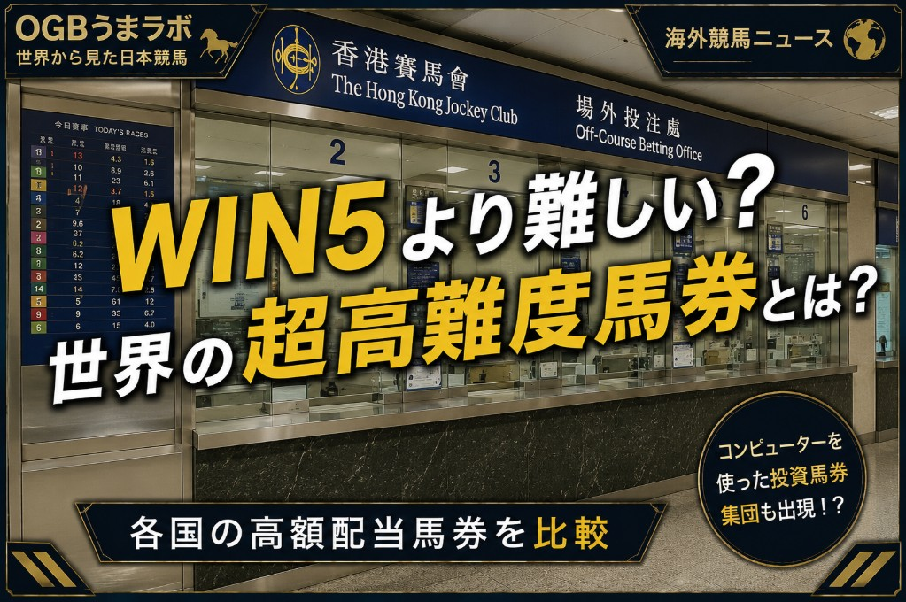

この記事は2026年6月29日にXで公開した原文を掲載しています。制度・数値などは公開当時の内容です。
【海外競馬ニュース】
日本のWIN5だけじゃない 世界にはさらに高難易度な馬券がある！
日本で高額配当馬券といえば、まず思い浮かぶのはWIN5です。
JRAが指定する5つのレースで、すべて勝ち馬を当てる馬券。
最高払戻は6億円。
2025年10月19日には、的中わずか1票で5億6252万1610円というWIN5史上最高払戻が出ました。
ちなみにこの記事を書いている前日の6/26のWIN5は、5レース中4レースがハンデ戦の大混戦という激ムズの日と言う事もあり、的中数は10組、配当は約5340万円と東京都区内は無理でも東京市部なら新築マンションでも買えそうな金額になりました。
とても夢がありますね。
宝くじを買うよりもよほど期待感があります。
しかし、海外に目を向けると、WIN5に似た高難度馬券は珍しくありません。
中には「3連複を3レース連続で当てる」という超高難度馬券まで存在します。
まずは、各国の代表的な高難度馬券を簡単に見てみましょう。
■日本 WIN5
5つの指定レースの勝ち馬をすべて当てる馬券。
購入はUMACAやネット馬券。
最高払戻は6億円で、2025年には5億6252万1610円の史上最高払戻が出ています。
■アメリカ Pick 6 / Rainbow 6
6レース連続で勝ち馬を当てる馬券。
競馬場の窓口や端末、州ごとに認可されたオンライン投票サービスなどで購入されます。
特にRainbow 6のようなジャックポット型では、1票だけの的中で巨大配当になる仕組みがあり、ガルフストリームパークでは過去に667万ドル超の払戻が出た例もあります。
現在の為替レートでは、およそ10億円規模になります。
■イギリス Scoop6
6つのレースの勝ち馬を当てる馬券。
競馬場、Tote、ブックメーカー、オンラインなどで購入できます。
2014年には繰り越しが積み上がり、8人の的中者がそれぞれ134万ポンド以上を手にしました。
現在の為替レートでは、1人あたり約2億6,000万円になります。
また英国には、勝ち馬ではなく最初の6レースで馬券圏内に入る馬を当てるPlacepotもあります。
2015年のチェルトナムでは、1ポンドが9万1774.50ポンドになる記録的配当が出ました。
■香港 Triple Trio
指定された3レースで、それぞれ上位3頭を順不同で当てる馬券。
日本風に言えば、3連複を3レース連続で的中させるような馬券です。
競馬場、場外馬券売場、香港ジョッキークラブの公式サービスなどで購入されます。
過去には1800万香港ドル規模の配当も記録されており、現在の為替レートでは約3億3,000万円に相当します。
香港にはSix Upという6レース型の馬券もありますが、難しさと独自性という意味ではTriple Trioが特に有名です。
■南アフリカ Pick 6
6レースの勝ち馬を当てる馬券。
特徴はフラクショナル投票です。
複数頭を選んで買い目が大きくなっても、全額ではなく50％、あるいはそれ以下の割合で購入できます。
的中した場合の払戻も、その購入割合に応じて支払われます。
■オーストラリア Big 6
TABが指定する6レースの勝ち馬を当てる馬券。
同じ競馬場の6レースとは限らず、複数の競馬場にまたがることもあります。
6レースすべて的中が本線ですが、5レース的中などに副配当がつく仕組みもあります。
こうして見ると、日本のWIN5は世界の中では「5レース連続勝ち馬型」の高難度馬券ですが、海外には6レース型、馬券圏内型、複数レースの3連複型など、さらに多様な高額配当馬券が存在します。
そして、今回の記事で特に取り上げたいのが香港の #TripleTrio です。
香港を代表する超高難度馬券
「Triple Trio」（トリプル トリオ）
Triple Trioは、単純な「勝ち馬を当てる馬券」ではありません。
指定された3レースで、それぞれ1～3着に入る3頭を順不同で当てる必要があります。
つまり、日本の馬券に例えるなら「3連複を3レース連続で的中させる」ようなイメージです。
当然ながら難易度は非常に高く、的中者が出ない開催も珍しくありません。
米メディアWiredの記事によると、香港ではコンピューター投票チーム対策としてTriple Trioのような複雑な馬券が作られたが、逆に最大級配当をコンピューター投票組が獲得した、という話です。
過去最大級のTriple Trioは1800万香港ドルで、2人のコンピューター投票プレイヤーが90万通りを120万香港ドルで購入して的中させたと報じられています。
日本のWIN5が「100円で夢を見る馬券」というイメージが強い一方で、香港ではTriple Trioがプロ馬券師やコンピューター投票チーム（シンジケート）の攻略対象にもなっているのです。
最近の日本の競馬界でもAIによる締切直前の大量購入により、締切直前のオッズと、締切後の確定オッズの差が激しく、馬券が買い難くなったといったような趣旨の投稿や発信を多く見るようになりましたが、あくまでも想像ですが、こういう投資グループの影響かもしれませんね。
まあこれは通常馬券の話ですが
世界にはさまざまな馬券文化がある
日本では中央ではWIN5、地方ではトリプル馬単が高額配当馬券の代名詞ですが、世界には国ごとにまったく異なる発想で作られた高難度馬券が存在します。
勝ち馬を当てる国。
馬券圏内を積み重ねる国。
3連複のような組み合わせを複数レースで当てる国。
馬券の仕組みを見比べるだけでも、その国ならではの競馬文化の違いが見えてきます。
なお、日本国内から海外のオンライン賭博サイトなどを利用して馬券を購入することは、日本の法律上問題があります。
一方で、現地の競馬場を訪れた場合は、その国や地域のルールに従って、競馬場の窓口や場外発売所などで馬券を購入できる場合があります。
海外競馬を観戦する機会があれば、レースだけでなく、その国ならではの馬券文化にも注目してみると、日本競馬との違いや新たな競馬の楽しみ方が見えてくるかもしれません。
#海外競馬 #競馬 #WIN5 #香港競馬 #アメリカ競馬 #イギリス競馬
2026年6月29日
うまラボ編集部
元記事：Xで公開した記事